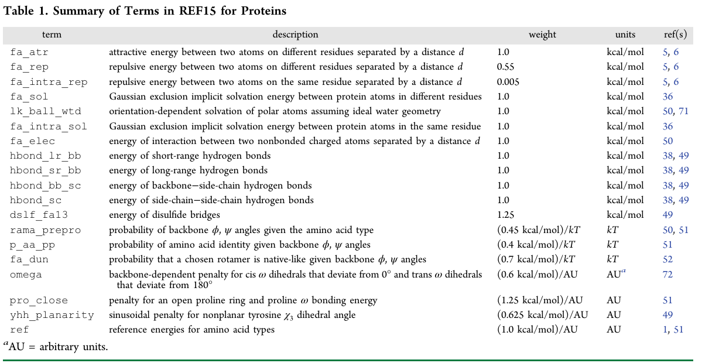

Bold text means that these files and/or this information is provided.
Italicized text means that this material will NOT be conducted during the workshop
fixed width text means you should type the command into your terminal
If you want to try making files that already exist (e.g., input files), write them to a different directory! (mkdir my_files)
This tutorial assumes that you have Rosetta added to your PATH variable, as this is how Rosetta is generally run. If you do not already have this done, add the rosetta applications to your path. For the Meilerlab workshop (tcsh shell), do this:
setenv PATH ${PATH}:${HOME}/rosetta_workshop/rosetta/main/source/bin
setenv PATH ${PATH}:${HOME}/rosetta_workshop/rosetta/main/source/tools
setenv PATH ${PATH}:${HOME}/rosetta_workshop/rosetta/tools/protein_tools/scripts/
alternatively, for bash shell users:
export PATH=${HOME}/rosetta_workshop/rosetta/main/source/bin:$PATH
export PATH=${HOME}/rosetta_workshop/rosetta/main/source/tools:$PATH
export PATH=${HOME}/rosetta_workshop/rosetta/tools/protein_tools/scripts:$PATH
Rosetta is assumed to be installed at ${HOME}/rosetta_workshop/rosetta
This tutorial is an example of an antibody single-state design experiment. The goal of this experiment is to take a previously crystallized antibody-antigen complex and optimize the antibody sequence for increased affinity for its target. Antibody single-state design is also referred to as affinity maturation, sequence optimization, or simply design - these terms can be used interchangeably. However, it should be noted that this is a separate protocol than de novo design. The difference is that this protocol optimizes an existing antibody-antigen complex, whereas de novo design creates a new antibody from scratch for a target antigen. If successful, the protocol in this tutorial will result in an optimized antibody sequence with increased affinity for its target antigen.
In this tutorial we are going to use the co-crystal structure of anti-influenza antibody CH67 against influenza hemagglutinin (HA) H1 SolomonIslands/03/2006.
Change your current directory to single_state_design and then create a directory called my_files and switch to that directory. Although many files you need for the tutorial are located in the input_files directory, we will work from my_files for the rest of the tutorial.
cd ~/rosetta_workshop/tutorials/protein_design/single_state_design
mkdir my_files
cd my_files
Prepare the input complex for design.
Download the co-complex from the Protein Databank (PDB). This complex is under the PDB ID 4hkx. The 4HKX.pdb file is provided in the input_files directory. However the instructions for downloading this PDB file are also provided below.
Prepare the PDBs for running through Rosetta. In general before running a PDB through Rosetta you should remove water molecules and all ligands that are non-essential to your protocol. We will use an automated script to do this processing.
We want to use hemagglutinin (chain E) and the antibody chains (chain A+B) from the PDB 4HKX, discarding the rest of the pdb file (script in ~/rosetta_workshop/rosettatools/protein_tools/scripts).
clean_pdb.py 4HKX ABE
This will result in 4 files being created: 4HKX_ABE.pdb, 4HKX_A.fasta, 4HKX_B.fasta and 4HKX_E.fasta
As an extra processing step we will remove any protein atoms that are not involved in the antibody-antigen interface. This will make the protocol run faster without any negative impact on the results. In this case we will delete the constant domain of the antibody on both the heavy and light chains. We will manually edit the PDB file in PyMOL to remove these atoms. Enter the following commands in the PyMOL command prompt.
pymol 4HKX_ABE.pdb
Then in pymol:
as cartoon
util.cbc
select heavy_constant, resi 339-438 and chain A
select light_constant, resi 537-639 and chain B
Look at the 4HKX complex in PyMOL and notice the heavy and light chain constant domains that were selected with the previous command. Notice how these domains are very far from the antibody-antigen interface. These can be removed to make the design protocol run more quickly.
remove heavy_constant
remove light_constant
save 4HKX_trim.pdb, 4HKX_ABE
Close pymol.
Next we will rename and reorder the chains in this complex. As a general convention it's good to name antibody chains H and L (heavy and light) and antigen chain A. This script will reorder the chains in our PDB, rename them to H,L,A, and renumber them starting from residue number 1.
python2 ../../scripts/reorder_pdb_chains.py --new_chain_order A,B,E \
--new_chain_ids H,L,A --norestart 4HKX_trim.pdb 4HKX_renum.pdb
Prepare a residue file (resfile) for design.
When designing a protein we need some way to tell Rosetta which residues should be designed, which should be repacked with no design, and which should be ignored. The residue file, known as a resfile, serves this purpose. Full documentation of the resfile format can be found at https://www.rosettacommons.org/docs/latest/rosetta_basics/file_types/resfiles.
In this tutorial, we will use script define_interface.py to define which residues are at the antibody-antigen interface. Interface residues on the antibody will be redesigned, and those on the antigen side will be repacked. This algorithm defines interface residues as those with a heavy atom within 5 A of a heavy atom on a residue on the opposing side of the interface.
Run define_interface.py to generate a resfile with designable and repackable residues.
python2 ../../scripts/define_interface.py --side1 HL --side2 A --design-side 1 \
--repack --output 4HKX 4HKX_renum.pdb
This will write a file called 4HKX.resfile, open it up and see if the file makes sense with what we've learned.
Repack or relax the template structure.
Rosetta protocols often work better on a structure that has been processed in some way after downloading from the PDB. Protein structures frequently have small clashes between side chains that are easily resolved by letting Rosetta optimize side chain conformations (known as repacking) or minimizing backbone phi-psi angles to relieve such clashes (known as relaxing). These problems are exaggerated when working with a low-resolution structure, when all side chain atoms may not be easy to place given the electron density.
In this tutorial we will relax our input complex while restraining the atoms to their starting positions. This allows Rosetta to relieve clashes while preventing the structure from moving too far from what was experimentally determined. More information on the relax protocol is available at https://www.rosettacommons.org/docs/latest/application_documentation/structure_prediction/relax. The relax options file and relax command file are provided in the input_files directory.
Copy the options file and command line for running relax from the input_files directory.
cp ../input_files/relax.options .
cp ../input_files/relax.command .
Run relax with constraints on the 4hkx complex.
relax.default.linuxgccrelease @relax.options -s 4HKX_renum.pdb > relax.out &
The relaxed model will take some time to run (~45min) - you can move on to the next step using pre-generated models. Copy the best scoring model to 4HKX_relax.pdb. In this case we only make a single model, but in general it's recommended to make a larger number of models (~10-50). In this case there are pre-generated relaxed models located in the output_files directory.
The lowest energy relaxed structure is 4HKX_renum_0010.pdb. Copy this model to your current directory.
cp ../output_files/4HKX_renum_0010.pdb 4HKX_relax.pdb
Design the antibody in our relaxed structure.
At this point all of our input files are ready and we can run design. We will run design through a RosettaScripts XML file - this allows more flexibility in creating a design protocol. In this tutorial the design protocol will use a single round of fixed backbone design.
Generally in protein design it is useful to use iterations of design and backbone motion. An example XML of design iterated with backrub motions is provided in the input_files directory, but will not be used in this tutorial. Backrub motions are small rotations of the backbone designed to mimic protein flexibility in solution. Small perturbations of the antibody backbone can provide more backbone diversity among our models to improve sequence diversity. Backrub motion in design is recommended for production runs.
Copy design.xml and design.options from the input_files directory.
cp ../input_files/design.xml .
cp ../input_files/design.options .
cp ../input_files/design.command .
Read through the XML and options files, and familiarize yourself with what different steps of the protocol are doing.
Generate ten designed models. These models will finish shortly (~1 minute per design).
rosetta_scripts.default.linuxgccrelease \
@design.options -parser:protocol design.xml -out:suffix _design \
-scorefile design.fasc
As a control we will repeat the same protocol without designing any residues. This is necessary because in our analysis we will want to compare the score and binding energy of designed models to the native sequence, and this comparison is only valid if our native sequence models are subjected to the same level of optimization as the designed models. Copy the XML, resfile and command line for the design control to the current directory. The XML protocol is identical except for which resfile is being used. 4HKX_control.resfile is the same as the previously used resfile, except the designed residues are changed from ALLAA (design) to NATAA (repack).
cp ../input_files/4HKX_control.resfile .
cp ../input_files/design_control.xml .
cp ../input_files/design_control.command .
Generate ten control models.
rosetta_scripts.default.linuxgccrelease \
@design.options -parser:protocol design_control.xml -out:suffix _control \
-scorefile control.fasc
While you are waiting for design and control models to finish you can move on to the next step with the pre-generated results in the output_files directory. Make a new directory and copy the files design.fasc and control.fasc from the output_files directory into this new directory.
Analyze the designed sequences.
To analyze the designed sequences it is useful to look at the score, binding energy, and binding density of the models. In a successful design run these metrics should be significantly lower for the designed models than the control models. We will pull these values from the score file and plot them side by side.
Plot the score and binding energy of designed models against control models. The script compare_design_to_control.py will take in the score files of both your design and control models and will make a plot of score and binding energy.
python2 ../../scripts/compare_design_to_control.py control.fasc design.fasc
gthumb *png
In this case the designs have improved stability and binding affinity compared to our native sequence. The next step is to look at what mutations specifically were made that result in this improvement. We will make a sequence logo from our models that shows which mutations were made and how frequent they were. Use the design_analysis.py script to make a sequence logo from our designed models.
python2 ../../scripts/design_analysis.py --prefix design --res 4HKX.resfile \
--native 4HKX_relax.pdb *design*pdb
gthumb design_seq_log.png
Open the lowest scoring control and design models in PyMOL and look at the amino acids introduced by design and how they interact with the antigen.
sort -nk2 design.fasc | head -1
sort -nk2 control.fasc | head -1
For the examples provided in the output directory they will be:
pymol 4HKX_relax_control_0001.pdb 4HKX_relax_design_0006.pdb
Generate per residue ROSETTA energy plots
python3 ../../scripts/PerResidueEnergies.py \
4HKX_relax_control_0001.pdb 4HKX_relax_design_0006.pdb \
-r `cat 4HKX.resfile | cut -d ' ' -f 1 | tail -n +3 | xargs`
For the examples provided in the output directory they will be:
gthumb ../output_files/PerResidueEnergies_*.svg
gthumb ../output_files/PerResidueEnergiesBreakdown_*.svg
Additional reading on design applications
Novel Enzyme Design - RosettaMatch and RosettaDesign Siegel, J.B. et al. (2010). Computational design of an enzyme catalyst for a stereoselective bimolecular Diels-Alder reaction. Science 329, 309-313.
Novel Protein Therapeutic Design Fleishman, S.J. et al. (2011). Computational design of proteins targeting the conserved stem region of influenza hemagglutinin. Science 332, 816-821.
Design of a thermally stabilized enzyme Korkegian, A., Black, M.E., Baker, D., and Stoddard, B.L. (2005). Computational thermostabilization of an enzyme. Science 308, 857-860.
Design of self-assembling proteins as nanomaterials King, N.P. et al. (2012). Computational design of self-assembling nanomaterials with atomic level accuracy. Science 336, 1171-1174.
Design of symmetric superfolds to understand protein folding evolution. Fortenberry, C. et al. (2011). Exploring symmetry as an avenue to the computational design of large protein domains. Journal of American Chemistry Society 133, 18026-18029.
Rational epitope design Wu, X. et al. (2010). Rational design of envelope identifies broadly neutralizing human monoclonal antibodies to HIV-1. Science 329, 856-861.
Rational vaccine design Jardine, J., et al. (2013). Rational HIV immunogen design to target specific germline B cell receptors. Science. Alford et al. 2017 provides an excellent overview over the ROSETTA scoring function REF15 and the meaning of its scoring terms:
